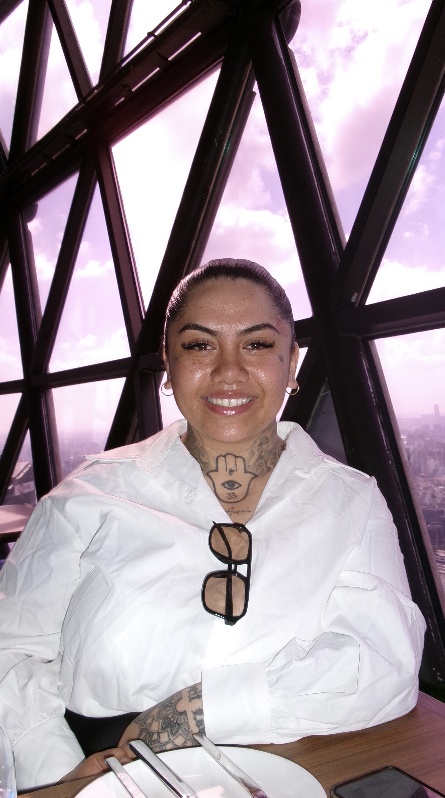

Built by hand.
Built with purpose.
RASTRICK. MADE is a custom website studio based in Canberra — creating custom-coded websites for businesses, community organisations, and not-for-profits that rely on trust, reputation, and meaningful connections.

Founder · RASTRICK. MADE
Marieke Clarke-Rastrick
Born and raised in Melbourne and now proudly based on Ngunnawal Country in Canberra, I didn't come from a traditional design or agency background.
I'm Samoan and Māori. I grew up in a large, creative family — and spent years working in industries where hard work, reputation, and quality of work are everything.
Those experiences shaped how I think and how I build. Good work should be honest, dependable, and done properly.
A creator.
At heart.
I'm Samoan and Māori, and culture has always played a significant role in my life. Growing up in a large family of eleven siblings, creativity was something that naturally found its way into everything I did.
My family jokes that I was always the creative child — the one sketching ideas, experimenting with new projects, wanting to build something that didn't exist yesterday. That curiosity never went away.
For me, creativity isn't limited to one thing. It's reflected in how I think, how I work, and in my love for design, fashion, art, and tattoo culture. The constant drive to create something from nothing eventually led me to website design and development.
Before RASTRICK. MADE,
I spent years in industries
built on hard work and reputation.
Before RASTRICK. MADE, much of my working life was spent in trade services and mining. Those years gave me something many designers never have — a firsthand understanding of industries that keep communities moving.
The early mornings. The practical problem-solving. The pride in quality workmanship. The reality of running a business where reputation is everything.
It's why RASTRICK. MADE naturally connects with service businesses, trades, and community organisations — because I understand the people behind them.
A different
kind of
studio.
Generic Templates
Your business isn't generic. Your website shouldn't be either. Everything is designed and built around your specific goals, your audience, and your context.
Bloated Platforms
No drag-and-drop builders, no page builder overhead, no platform lock-in. Just clean, custom code that performs well, loads fast, and remains flexible.
Unnecessary Layers
No account managers. No sales team. No outsourcing. Just direct communication and a personal working relationship from the first conversation to launch.
I started RASTRICK. MADE because too many businesses were being pushed into platforms and processes that didn't reflect the quality of the work they actually do. Most organisations don't need complexity — they need a website that clearly communicates who they are and helps people take the next step.
A small, independent studio focused on building websites that feel personal, perform well, and genuinely represent the people behind them. That's exactly what I set out to create.
Direct.
Personal.
Intentional.
When you work with RASTRICK. MADE, you're working directly with me — the person designing and building your website from start to finish.
You work directly with me
No account managers, no sales team, no outsourcing. The person who understands your brief is the same person who designs and builds it.
Custom-coded from the ground up
Every website is built using HTML, CSS, and JavaScript. No page builders, no drag-and-drop platforms. Clean, flexible code built specifically for your organisation.
Clear communication throughout
Direct, honest conversation from brief to launch. You always know where things are and why decisions are being made. No surprises.
Built around your goals
Great websites come from genuinely understanding the people behind the project — your goals, your audience, your context. Every project starts there.
I work with people who care deeply about what they do. Behind every organisation is a story worth telling — and a website should help tell that story well.
Built to
give back.
RASTRICK. MADE believes businesses should contribute positively to the communities they serve.
1% of every completed project is donated to organisations creating meaningful impact across Australia — supporting causes aligned with community wellbeing, cultural strength, safety, opportunity, and positive social impact.
As the studio grows, so does this contribution. Small contributions, made consistently, can still become part of something meaningful.
Good people.
Meaningful work.
To create websites that earn trust, reflect the quality of the people behind them, and help good organisations create a lasting impact in the communities they serve.
That's what RASTRICK. MADE is built for.